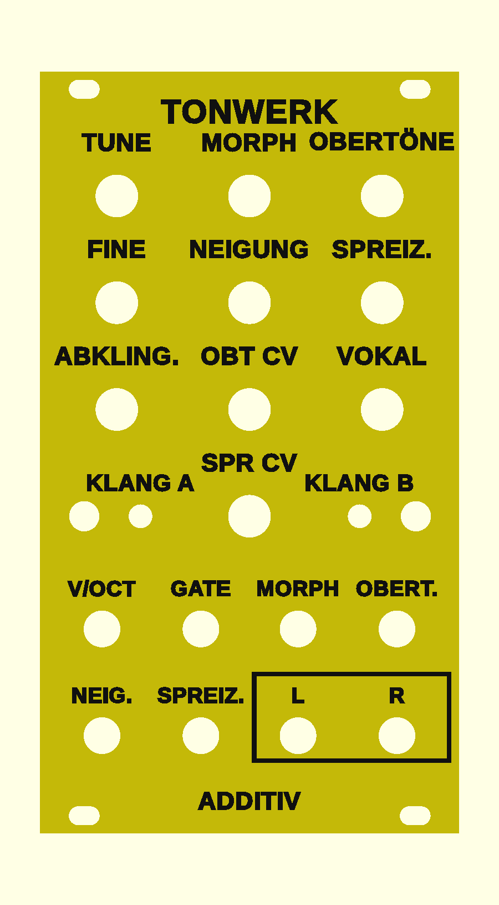

Tonwerk Additiv as a Eurorack module
A fifth firmware for the same boards as the wavetable module: the sound engine of the plugin Tonwerk Additiv. The sound is made of up to 64 sine partials whose strength and place the module keeps setting anew. Morph, tilt and stretch under CV turn a saw into an organ, a bell or a vowel, and nothing ever folds back.
Overview

- The same sound as the plugin: the module computes the partials as the plugin does. A test on the computer compares every spectrum and every kind of shaping with the plugin.
- Twelve spectra: sine, saw, square, triangle, pulse, organ, hollow, bright, octaves, glass, primes, random. MORPH blends two of them (A and B).
- Shaping: number of partials, tilt, odd against even, stretch, beating, a comb, three formants of a vowel and a filter. All of it acts as a level per partial, so the filter can neither whistle nor fold back.
- An envelope per partial: the high partials come in later and die away sooner, as on a plucked string or a bell.
- Stereo: odd and even partials to the left and right, the outputs are L and R.
- One voice: V/OCT, GATE and CV for morph, count, tilt and stretch.
- A front panel of its own; the preview shows it yellow with black lettering, the colours are up to you.
This firmware is tested on the computer; it has never run on an ESP32. With all 64 partials and every kind of shaping I estimate 30 to 50 % of a core.
Operation
The front is the same as on the wavetable module, only the lettering differs. The WARP button is called KLANG A (sound A) here, the FILTER button KLANG B. Layers, pick-up, holding versus tapping, saving and calibration work exactly as described there.
All knobs
| Knob | Normal | KLANG A held | KLANG B held |
|---|---|---|---|
| TUNE | Tuning ±2 octaves in semitones | Attack, 1 ms to 10 s | Filter: off, lowpass, highpass, bandpass, notch (default off) |
| FINE | Fine tuning ±50 cents | Decay, 5 ms to 10 s | Cutoff, 20 Hz to 20 kHz |
| MORPH | From spectrum A (left) to spectrum B (right) | Sustain | Resonance |
| OBERTÖNE | How many partials sound, 1 to 64; the first part of the travel is for the first few | Release, 5 ms to 10 s | Key tracking of the filter |
| NEIGUNG | Tilt, ±12 dB per octave: brighter to the right, darker to the left. The loudness stays the same. | Odd against even: to the right only the odd partials (hollow), to the left more of the even ones | Depth of the comb |
| SPREIZ. | Stretch: harmonic in the middle; to the right the partials move up as on a stiff string or a bell, to the left down | Beating: each partial detuned by up to 50 cents, each its own way | Spacing of the comb, every 2 to 16 partials |
| ABKLING. | How fast the partials die away, 50 ms to 20 s, the high ones sooner. Fully right they never do. | Bloom: how late the high partials come in, at once on the left, up to 5 s | Shift of the comb |
| VOKAL | Off on the left, then the formants fade in on A and move through E, I and O to U | Width in the stereo field (default 50 %) | Formants shifted by ±12 semitones: a smaller or larger throat |
| OBT CV | Attenuverter for the OBERT. jack: middle 0, right full, left inverted | Hold: how far the partials die away to (default all the way) | Phases: left all alike (a hard attack), right random (default) |
| SPR CV | Attenuverter for the SPREIZ. jack: middle 0, right full, left inverted | Damping: how much sooner the high partials die away (default 50 %) | – |
Spectra (tap KLANG A and KLANG B)
| LED | Spectrum | How it sounds |
|---|---|---|
| white | Sine | The fundamental alone. |
| yellow | Saw | Every partial, each quieter by its number. Spectrum A by default. |
| cyan | Square | Only the odd partials, hollow. Spectrum B by default. |
| green | Triangle | Odd partials, quickly quieter: soft. |
| magenta | Pulse | A pulse a quarter wide: every fourth partial missing. |
| orange | Organ | The first eight partials like pulled drawbars. |
| blue | Hollow | Strong odd and faint even partials, like a clarinet. |
| light orange | Bright | Every partial, slowly quieter: brighter than the saw. |
| violet | Octaves | Only the fundamental and its octaves. |
| turquoise | Glass | Only partials 1, 4, 9, 16 …: glassy, a bell with some stretch. |
| red | Primes | The fundamental and the partials with a prime number. |
| grey | Random | Each partial randomly strong, always the same randomness. |
A tap on KLANG A steps spectrum A on, LED 1 shows it; KLANG B does the same for spectrum B on LED 2. All spectra are equally loud. Both LEDs light up with the envelope and dim with it, never quite off.
Striking and pitch
- With a gate
- A rising edge at GATE starts the envelope and the partials' envelopes; when the gate falls, the release begins.
- With V/OCT alone
- While the gate is on, or no cable is in GATE, a jump at V/OCT of at least half a semitone does the same, as with the Physical firmware. A glide only moves the pitch.
- Plucked or held
- Unless ABKLING. is fully right, every strike dies away, even with the gate held, the high partials first. Fully right the note holds as long as the gate is on.
- Pitch
- 0 V is C2, 1 V per octave. Partials above 0.47 of the sample rate are dropped; high notes therefore have fewer partials, but never aliases.
Jacks
| Jack | Range | What it does |
|---|---|---|
| V/OCT | −1 to +7 V | Pitch, 1 V per octave, 0 V = C2. A jump strikes (see above). |
| GATE | from about 1.4 V | Rising: strike. Falling: release. Without a cable always on. |
| MORPH | ±5 V | Adds to the morph, 5 V over the knob's whole travel. |
| OBERT. | ±5 V | Moves the number of partials, through the attenuverter OBT CV. |
| NEIG. | ±5 V | Adds to the tilt, 5 V over the whole travel; with the knob up to ±24 dB per octave. |
| SPREIZ. | ±5 V | Moves the stretch, through the attenuverter SPR CV. |
| L (output) | ±5 V | Left channel. |
| R (output) | ±5 V | Right channel. For mono set the width to 0, then both are the same. |
The outputs are at module level. They are far too loud for headphones; always go through a mixer or an output module. With a lot of resonance or vowel a spectrum can go over full scale; the output rounds that off softly.
First patches
- Morphing pad
- Organ as A, hollow as B, no gate cable, a slow LFO into MORPH. Width (KLANG A held, VOKAL) fully right.
- Bell
- Bright or glass, SPREIZ. well to the right, ABKLING. at about two seconds, gate from the sequencer; in the KLANG A layer a little beating and sustain at 0.
- Talking bass
- Saw, ABKLING. fully right, gate and V/OCT from the sequencer, turn VOKAL by hand between A and U and put an LFO into NEIG.
- Counting partials
- Saw, phases alike (KLANG B held, OBT CV fully left), OBERTÖNE slowly from left to right, or an envelope CV into OBERT.
Front panel
The same three variants as for the wavetable module (build guide, step 2), with this firmware's lettering: raised lettering, engraved lettering and inlaid lettering (3MF, two colours). For the raised print start with the panel's colour and change to the lettering's at 2.5 mm.
Firmware
The firmware is one file, tonwerk-additiv.bin, written to address 0x0 as in the build guide, step 8. It needs no tables; the first start is as short as any other.
Flashing over USB erases the saved settings and the calibration. So calibrate again afterwards. Over Wi-Fi they are kept, with the left button held at power-on: update over Wi-Fi.
As of 31 October 2026. Source code and front panel are on GitHub under the same PolyForm Noncommercial License as the plugins: building one for yourself yes, selling only with permission.